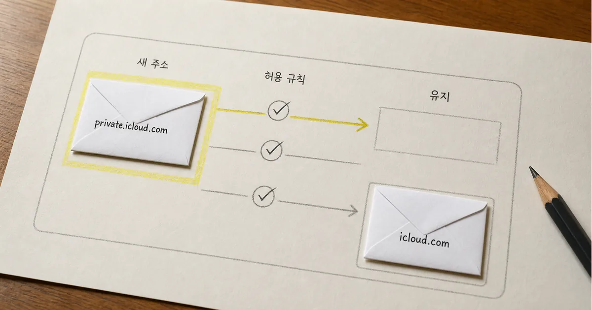
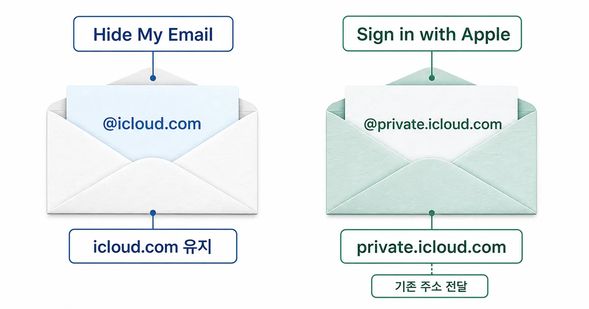
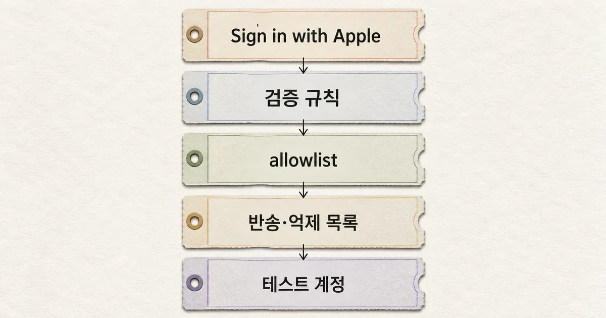

Apple 로그인을 쓰는 앱·웹사이트라면 올해 후반부터 새 릴레이 주소의 도메인이 바뀐다. 기존 주소는 계속 작동하지만 회원가입 검증, 도메인 허용 목록, 인증 메일 발송 규칙이 새 주소를 막을 수 있다. 해결은 기존 규칙을 지우는 것이 아니라 private.icloud.com을 함께 허용하고 신규·기존 계정 흐름을 모두 시험하는 것이다. 확인할 곳은 네 군데다.

핵심 해설 · Apple Developer · 2026. 8. 24
Apple 로그인 새 릴레이 도메인, 올해 후반부터 적용
Apple은 올해 후반부터 새 Sign in with Apple 릴레이 주소에 private.icloud.com을 사용한다. 기존 privaterelay.appleid.com 주소는 계속 작동하며 Hide My Email 주소는 icloud.com을 유지한다.
결론부터: 새 도메인을 기존 주소와 함께 허용한다
Apple 공지의 핵심은 단순하다. 올해 후반부터 새 Sign in with Apple 릴레이 주소에는 private.icloud.com이 쓰인다. 이미 발급된 privaterelay.appleid.com 주소는 계속 작동하므로 기존 규칙을 교체하지 말고 새 도메인을 추가해야 한다.
새 주소가 회원가입에서 거절되거나 인증 메일을 받지 못한다면 입력 검증, 서비스의 도메인 정책, Apple 비공개 릴레이 발신 설정, 메일 공급자의 차단·억제 목록을 확인한다. 아래 네 곳 가운데 하나라도 기존 도메인만 알고 있으면 오류가 남을 수 있다.
| 기능 | 새 주소 | 기존 주소 | 서비스 대응 |
|---|---|---|---|
| Sign in with Apple | private.icloud.com | privaterelay.appleid.com 계속 작동 | 두 도메인을 함께 허용 |
| Hide My Email | icloud.com 유지 | 기존 주소 유지 | 변경 없음 |

private.icloud.com을 쓰며 Hide My Email은 icloud.com을 유지한다.내 서비스가 영향을 받는지 먼저 가른다
영향 대상은 Sign in with Apple에서 사용자가 ‘나의 이메일 가리기’를 선택했을 때 받는 릴레이 주소다. 일반 iCloud 메일 전체가 바뀌는 것이 아니며 iCloud+의 Hide My Email 주소도 이번 변경 대상이 아니다.
서비스가 Apple 로그인 이메일을 저장하지 않거나 도메인별 규칙을 전혀 쓰지 않는다면 코드 수정 범위는 작을 수 있다. 그래도 인증·알림 메일을 릴레이 주소로 보내는 서비스라면 발신 도메인 등록과 SPF·DKIM 인증 상태는 확인해야 한다.
확인할 곳은 네 군데다
저장소에서 privaterelay.appleid.com, icloud.com, allowlist, denylist, suppression을 함께 찾으면 숨은 규칙을 빠르게 좁힐 수 있다. 모든 icloud.com 하위 도메인을 넓게 신뢰하지 말고 Sign in with Apple 흐름에 필요한 범위만 추가한다.

- 입력 검증: 이메일 정규식과 가입 API가
private.icloud.com을 거절하지 않는지 본다. - 서비스 정책: 초대·조직 도메인 허용 목록과 CRM 가져오기 규칙에 예외가 있는지 찾는다.
- Apple 릴레이 발신 설정: 등록한 발신 도메인·주소와 SPF·DKIM 인증 상태를 확인한다.
- 메일 공급자: 차단·반송·억제 목록과 보안 게이트웨이가 새 주소를 막지 않는지 확인한다.
배포 전 신규·기존 계정을 함께 시험한다
신규 테스트 계정에서는 Apple 로그인, 계정 생성, 이메일 인증 링크 수신을 끝까지 실행한다. 비밀번호 재설정이나 중요 알림처럼 같은 주소를 다시 읽는 기능도 한 번 보내 본다.
기존 privaterelay.appleid.com 계정에서는 재로그인과 메일 수신이 그대로 되는지 확인한다. 실패하면 API 로그, 검증 라이브러리, 메일 공급자 이벤트를 순서대로 대조하되 로그에는 전체 주소 대신 도메인이나 해시만 남긴다.
기존 주소를 지우면 안 된다
Apple은 기존 릴레이 주소가 계속 작동한다고 안내했다. 새 도메인으로 일괄 치환하면 기존 사용자의 로그인이나 알림 흐름을 오히려 끊을 수 있다. 배포와 되돌리기 기준 모두 ‘두 주소를 함께 지원한다’에서 시작해야 한다.
계정 연결에는 검증한 ID 토큰과 Apple이 제공한 사용자 식별자를 쓰고, 이메일은 바뀔 수 있는 연락 수단으로 분리한다. 운영 문서에는 새 도메인을 추가한 위치와 신규·기존 계정 테스트 결과를 남긴다.
새 주소를 허용하는 것과 기존 사용자를 지키는 것은 같은 배포에서 함께 확인해야 한다.
참고한 자료
이번 변경은 기존 도메인을 새 도메인으로 교체하는 작업이 아니다. 신규 주소를 받을 경로를 추가하면서 기존 사용자의 로그인과 메일 전달도 보존해야 한다. 이메일은 바뀔 수 있는 연락 수단으로 두고 Apple의 사용자 식별자는 별도로 관리하면 다음 도메인 변경에도 계정 연결이 흔들리지 않는다. 배포 전 신규 테스트 계정과 기존 릴레이 계정으로 가입·재로그인·인증 메일 수신을 각각 확인하고 결과를 운영 기록에 남긴다.